Chapter 14 Timeline
This chapter deals with playback automation by creating Timelines and receiving external Time Code protocols and MIDI signals to trigger the controllers.
The following is covered in this chapter:
14.1 Timelines
Vibe uses a philosophy of Timeline Tracks.
There is no limit to the number of Timeline Tracks that may be recorded in a show.
Timelines can be added to a Timeline View and played simultaneously following an internal or external Time Code.
Vibe can read the following Time Code sources:
Virtual Local - Internally generated Time Code.
Physical Local - SMPTE or MIDI Time Code received at the SMPTE audio input or via the DIN 5 pin MIDI connector on the back of the console.
USB MIDI class compliant Time Code.
MIDI over Ethernet via Compulite VC protocol.
Input sources from remote Multi-User consoles and devices
Vibe can record data from multiple controllers simultaneously.
Additional timeline subtracks will be created on a per controller basis.
Vibe also supports fader automation on timeline tracks.
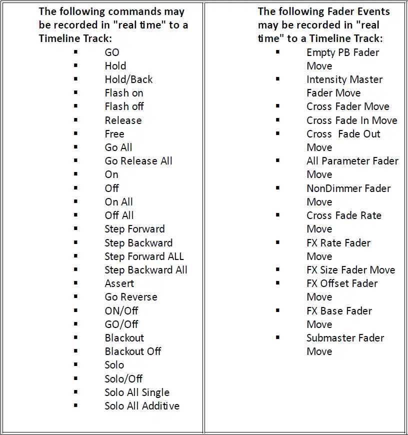
Vibe automatically matches frame rates to the incoming source.
Supported frame rates are:
24 FPS
25 FPS
29.97 FPS drop-frame
30 FPS
14.1.1 View
If no layout contains a Timeline view, the first step to create a Timeline is to add a Timeline View to the layout.
Unlimited Timeline views may be created and each Timeline View may have its own Time Code.
As long as more Timeline views are set on different clock sources, they can load different Timelines and moved independently.
If Timeline views are based on the same clock source, they will be synchronized and will load the same tracks and options.
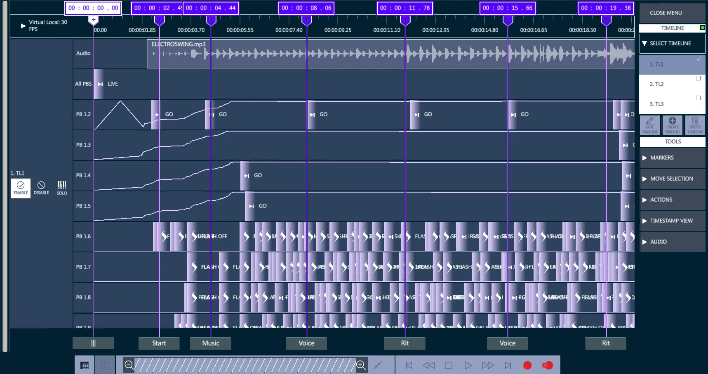
The Timeline view shows all the active Timelines and allows to enable and disable them, or play in “solo” mode.
Use the Timeline view’s menu to load the Timelines on the view, as well as to create, edit or delete Timelines.
14.1.2 Record
After a Timeline View has been created, timeline tracks may be recorded. Timeline events may be recorded in “real time” and then edited afterwards.
Create a timeline track:

Open the Timeline View menu.
Tap + and the “Create New Timeline” popup will open.
Select a timeline number and name.
Choose Start from {Blank} or {Existing} Timeline and Apply.
Tap the {Select Clock} drop down in the top left corner and select the timecode source.
Virtual Local - Use internal timecode clock.
Physical Local - Use the SMPTE or MTC timecode inputs on the console.
Additional options will populate the list depending on the interfaced timecode device.
- Enable the red {Record} button or the {+ Record} button.
{Record} overwrites the existing events.
{+ Record} adds new events to the existing ones.
If using internal TC, press Play.
If using external TC start the timecode source.
The timeline will start to move and all controller presses and motorized fader moves will now be recorded on sub-tracks, one for each controller’s events.
When all recording is done, either stop the external timecode source or press the Stop button if the clock source is internal.
👉 Disable the Record button to prevent accidental overwrite of events.
Trigger a Timeline
Timelines can be triggered and zoomed via the Timeline view’s transport bar.
Timeline commands can be also triggered via the Editor Toolbar in Program and Playback pages.
Grid View Filters
Switch from the Graphical to the Grid view and viceversa with the toggle button on the control bar.
In the grid view it is possible to see all events from all timelines or to filter events by timeline and see only its own events.
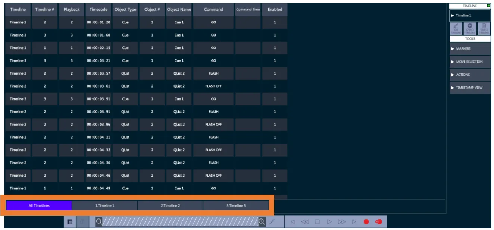
14.1.3 Commands
These commands will affect the selected timelines in the sequence. Some sequences will affect the selected timelines regardless of their current view and some will affect them on the “Active Timeline View”.
Commands for the Timeline
Go to idle state
Press Timeline # (+#, ⟶#, etc.)
The Editor Toolbar shows the available commands:
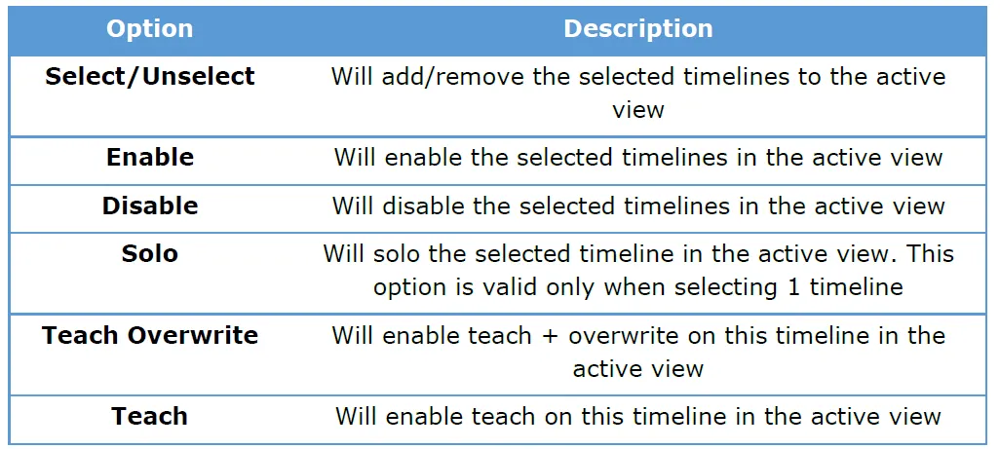
Sequence may also end with:
Store – will create the timelines if they are not already created
Delete – will delete the timelines if they exist
Text – will open text box to give a name to the selected timelines
Copy – will add the timelines to the clipboard
Paste – will paste the copied timelines from the clipboard
If the source is external MIDI or SMPTE timecode, press [Play] on the timecode source. The events will synchronize to the source timecode.
If the source is internal, tap {Play} on the timecode view’s control bar. The internal timecode will start and events will execute.
The control bar may be used to stop and rewind events when the source is internal.
Record may be enabled and disabled “on the fly” to overwrite sections of a timeline track.
forwards and backward using the Set Delta pop-up in the Actions drop down.
To trigger Timeline commands via the panel and Editor Toolbar there is an “Active Timeline View” indicator:
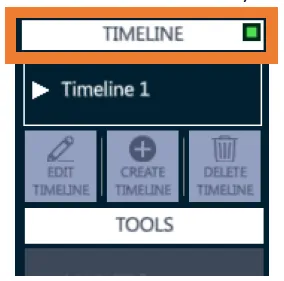
If there are more than 1 Timeline Views on the layout, only 1 of them can be the “Active” one.
Tapping the white header of the view will select the current view as the “Active” and will remove the Active sign from the other views.
Each Timeline View has an active clock. All Timeline Views that have the same clock will be automatically synced.
Commands for the Active Timeline
These commands will affect the Active Timeline View.
Go to idle state
Press Timeline from the panel
You see on the Editor Toolbar the available commands:
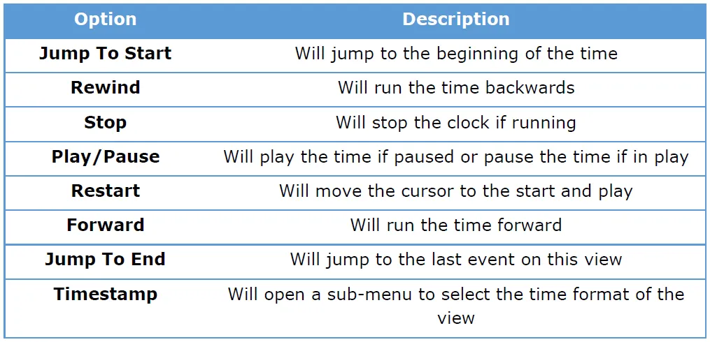
14.1.4 Gestures
Use the following gestures on the timeline view to manage the events:
Tap on a single event – toggles the event selection
Tap on a playback box – toggles the playback selection
Tap on a marker – toggles the marker selection
Rectangle draw using touch and drag – toggles all the events inside the rectangle
Double-tap an empty area – clear the selection
Double tap on the time bar – sets the current time to the selected time
Long click an event and drag – moves the position of all the selected events
Double finger vertical scroll on the view – will scroll the Timelines
Double finger horizontal scroll on the time bar – will scroll the time bar
Selection can have only one type of objects at a time. Selecting a timeline object (i.e. Playback, Event, Marker…) will clear all other objects selections.
14.1.5 Markers
To aid in timeline navigation, Markers may be inserted.
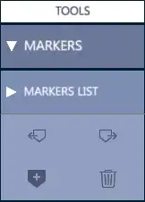
To insert a marker:
Press the + at the desired location when the timeline is running. A marker will be inserted.
Press ⟵ to move backwards through the markers.
Press ⟶ to move forwards through the markers.
Press 🗑️ to delete a marker
In the Timeline view, markers can be moved by assigning a direct time, and they can be assigned a delta.
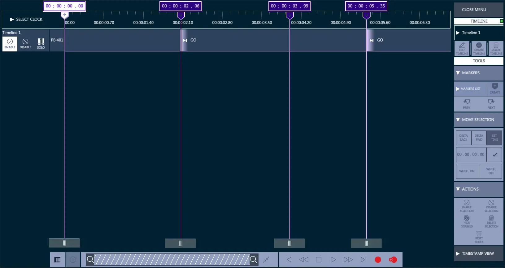
The Timeline Grid View shows the list of Markers on a dedicated tab, where they can be named. Markers’ names will appear also in the graphical view, on the bottom of the marker.
14.1.6 Move Selection
The Move Selection submenu offers options to set move the selected events.
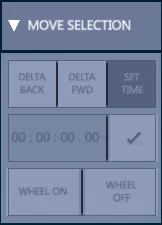
It is possible to change selected event times via the physical wheels.
There are 2 new buttons to assign the delta time for the selected events to the physical wheel and then move it.
There are 2 physical wheels that are available for use:
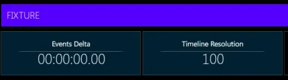
The left one is for moving the selected events.
The right one is to change the time resolution for the current time movement.
14.1.7 Actions
The Actions submenu offers options to manage the selected events.
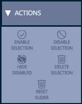
All the events can be moved on the timeline with drag&drop commands in the graphical view, or by assigning a different time in the grid bar.
The Actions menu allows to enable or disable the selected events, to delete them from the timeline, or to hide the disabled events from the view.
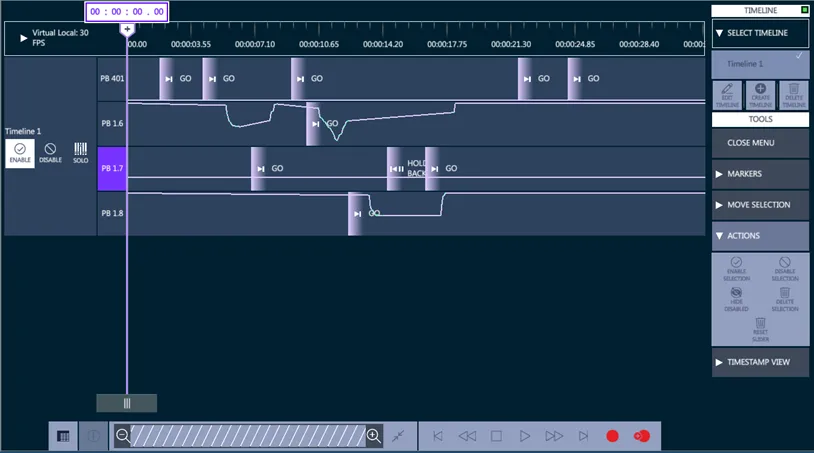
In the Actions menu there is the option to Reset Slider Value from a playback and set it to a fixed value between zero and full.
To clear the slider value from a timeline:
Open a timelines
Select the target playback
On the menu, open the Actions
Press Reset Slider
Assign the slider value on the virtual slider popup
14.1.8 TimeStamp
It is possible to view the timeline and events data in different time formats.
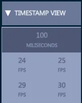
The default time format is milliseconds, but it is also possible to use FPS format.
The time format selection can be set on the Timestamp View sub-menu.
14.1.9 Audio Track
Timelines can load Audio Tracks in common file formats such as .mp3 and .wav.
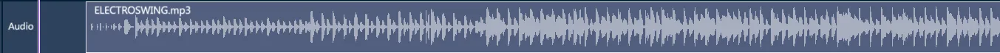
To add an audio track to a timeline:
open the Audio section on the menu
tap ADD
select the target timeline on the selection popup and tap Apply
select the audio file on the load popup and tap Apply
The Audio Track will be loaded on the top line of the Timeline, showing the file name and the audio spectrum.
14.2 Time Code
Time Code is used to synchronize Vibe events with the internal timeline or external SMPTE Linear Time Code (LTC) or MIDI Time Code (MTC).
14.2.1 Connections
Vibe has Time Code connectors for the following:
Audio Combi Jack connector for SMPTE input with:
Female unbalanced line level input on 1/4” phone jack
Female 3 pin XLR balanced line level input.
Female 5 Pin DIN connector for MIDI input.
Female 5 Pin DIN connector for MIDI output.
USB 2 and USB 3 ports for USB class compliant MIDI over USB devices.
RJ45 ports for MIDI over Ethernet (Compulite devices)
14.2.2 LTC
To trigger a timeline with an LTC or Linear Time Code source, the SMPTE input protocol needs to be enabled.
Open the I/O Settings popup from the Vibe menu or with the {I/O Settings} button.
The SMPTE Tab contains the toggle button to enable or disable the LTC input.
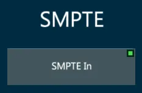
Currently Vibe is only capable of receiving LTC inputs, but will be able to send SMPTE output in future releases.
Recommended quality and level for SMPTE:
SMPTE is very sensitive to distortion and also requires adequate gain. A clean audio signal with a gain ranging between 0db to +5db is recommended.
As the console SMPTE input is high impedance, if long runs are to be used it is recommended to send a 150 - 600 ohm balancing line level feed to a transformer close to the console and convert to high impedance.
14.2.3 MTC
To trigger a timeline with an MTC or Midi Time Code source, the MTC input protocol needs to be enabled.
Open the I/O Settings popup from the Vibe menu or with the {I/O Settings} button.
The MIDI Tab contains the toggle button to enable or disable the MTC input.
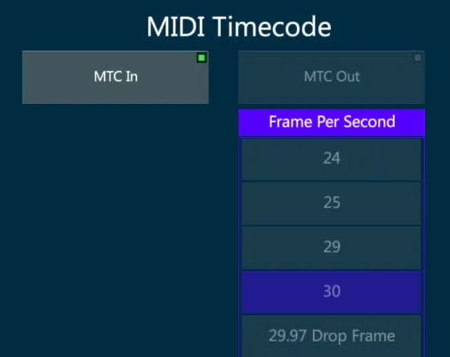
Currently Vibe is only capable of receiving MTC inputs, but will be able to send MTC output in future releases.
MIDI Time Code is similar to the SMPTE Time Code and is used to synchronize audio, video, and lighting equipment, but unlike the SMPTE it does not use an audio signal.
MTC is available in the following frame rates:
24 frame/s (standard rate for film work)
25 frame/s (standard rate for PAL video)
29.97 frame/s (drop-frame timecode for NTSC video)
30 frame/s (non-drop timecode for NTSC video)
14.3 MIDI
MIDI (Musical Instrument Digital Interface) is a protocol that was originally developed by the music industry to allow multiple MIDI sound devices to be triggered from just one source, usually a master keyboard or synthesizer.
MIDI is a control protocol and does not transmit audio.
Over the years the MIDI protocol has evolved to become a common way to synchronize sound, video and lighting equipment.
MIDI is based on a 7-bit architecture and therefore has a theoretical limit of 127 possible notes for a keyboard. (Most pianos use only 88 notes and synthesizers even less)
MIDI implementation:
16 independent MIDI channels - The channels systems listen to.
127 Note ONs - Pressing down on a keyboard.
127 Note OFFs - Lifting off a keyboard.
Note On Velocity of 1 ⟶ 127 - How hard the key is struck.
After Touch pressure of 0 ⟶ 127 - How much pressure is applied after the key reaches the bottom.
127 controllers each with a range of 0 ⟶ 127 - Encoder wheels or sliders.
Patch changes from 0 ⟶ 127 - Change from one instrument to another.
Pitch bend wheel that has a 14-bit resolution.
A section for MIDI time code and other manufacturer’s “System Exclusive” information.
14.3.1 MIDI Settings
To receive and generate Midi signals each protocol needs to be enabled.
Open the I/O Settings popup from the Vibe menu or with the {I/O Settings} button.
In MIDI Tab it is possible to enable and disable the Midi Notes, the Midi Time Code and the Midi Show Control devices.
Configure MIDI:
Connect all appropriate MIDI devices and power them on.
Toggle a MIDI Connection source:
Local MIDI is generated and received from the 5 pin DIN connectors on the back of the console.
MIDI over USB is transmitted and received over standard USB connectors. The device must be MIDI over USB class compliant to work with Windows without a driver. If the device has a Windows driver available it is recommended to install the driver for optimal results.
MIDI over Ethernet is supported by Windows class compliant MIDI over Ethernet and Compulite VC MIDI over Ethernet devices.
Refresh MIDI Connection looks for new connections if devices have been added later.
- Press Apply to stay in I/O settings, press [ENTER] or tap the Apply icon to close the popup.
14.3.2 MIDI Notes
In lighting MIDI notes and controllers from external sources are matched to the console’s controllers, buttons and wheels to synchronize the playback.
A GO Button on console A is configured to send Note #46, and a GO button on console B is configured to receive note #46. Pressing GO on console A console will press the GO on console B. In EDM shows DJ’s frequently control lighting via MIDI touchpad controllers.
To configure MIDI Notes open the I/O Settings popup from the Vibe menu or with the {I/O Settings} button.
In Midi Tab enable the Midi Notes In / Out and the Active Midi Channels on the columns.
In Notes/Commands Tab it is possible to assign specific commands to the Midi notes.
The numbers 0 ⟶ 127 on the MIDI grid represent 10 3/4 octaves of notes from C-0 ⟶ G-10.
Tabs at the bottom filter the type of MIDI message to be received.
Channel # may also be selected to filter just messages being received on the selected channel.
The MIDI grid is used to select any of the 127 values available for the MIDI message types selected with the tabs.
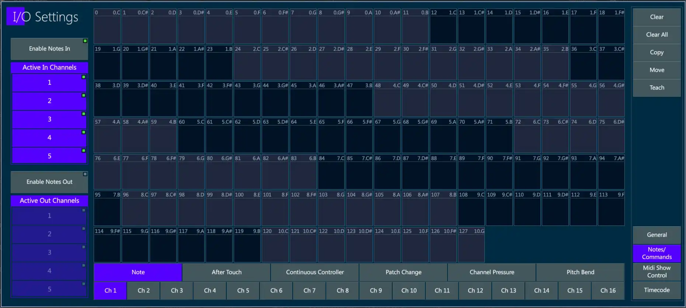
Assign MIDI Notes to Controllers:
In Midi Tab enable Notes In or Notes Out.
By default, all 16 available channels will be selected. Deselect as needed.
In Notes/Commands Tab select the tab for the type of MIDI message to be received.
Possible messages types are:
Note (Note ON = press down on controller key, Note OFF = release of controller key).
After Touch
Continuous Controller
Path Change
Channel Pressure
Pitch Bend
Tap {Teach } - The Teach key will turn purple.
Tap the desired note box in the MIDI grid - The box will turn purple.
Press any one of the controller keys - The location and button function of the controller will appear in the box.
Tap the {Teach} key again to toggle it off.
Tap Apply or press [ENTER] to close the popup.
Assign MIDI Continuous Controller to Vibe Controller:
Select the channel that the MIDI message will be received on.
Select the tab for the type of MIDI message to be received. In this case Continuous Controller.
Tap {Teach } - The Teach key will turn purple.
Tap in the desired continuous controller # in the MIDI grid - The box will turn purple.
Move any of the Vibe slider faders - The location and controller type will appear in the box.
Tap the {Teach} key again to toggle it off.
Tap Apply or press [ENTER] to close the popup.
Assign Macros to a MIDI note:
Select the channel that the MIDI message will be received on.
Select the tab for the type of MIDI message to be received.
Tap {Teach } - The Teach key will turn purple.
Tap the desired note box in the MIDI grid - The box will turn purple.
Press [MACRO] - The Macro selector popup will appear.
Select or type a previously recorded {Macro #} - the Macro # will appear in the the box.
Tap the {Teach} key again to toggle it off.
Tap Apply or press [ENTER] to close the popup.
Additional functions:
Tap {Clear} followed by a MIDI grid box to clear its assignment.
Tap {Clear All} to clear all MIDI assignments.
Tap {Copy} followed by the source MIDI assignment and then the destination MIDI assignment to copy from one note to another.
Tap {Move} followed by the source MIDI assignment and then the destination MIDI assignment to move the assignment from one note to another.
14.3.3 MSC
MIDI Show Control is a significant Real Time System Exclusive extension of the international Musical Instrument Digital Interface (MIDI) standard.
MSC enables all types of entertainment equipment to easily communicate with each other through the process of show control.
The MIDI Show Control protocol is an industry standard ratified by the MIDI Manufacturers Association in 1991 which allows all types of entertainment control devices to talk with each other and with computers to perform show control functions in live and canned entertainment applications.
Just like musical MIDI, MSC does not transmit the actual show media, it simply transmits digital information about a multimedia performance. * Courtesy Wikipedia
Midi Show Control was developed as a simple standard method of triggering basic commands on dissimilar devices.
Basic MSC commands are:
Go
Stop
Fire (Generally used for macros)
Also supported on receive are:
All fixtures
General lights
Moving lights
Receive MSC:
Tap {MTC In} in the I/O Settings popup, Midi Tab.
Match the {Device #} to number of the peer that will be sending the control commands.
If the Peer # is above 111, select a Group # that matches and all devices set to that Group # will receive MSC packets.
If the Peer # is 127 (Broadcast Mode) packets will be received on all devices regardless of their Device or Group numbers.
Transmit MSC:
Not implemented yet.
Recommended reading: http://jac.michaeldrolet.net/SCS_10_Help/scs_options_mid_msc.htm